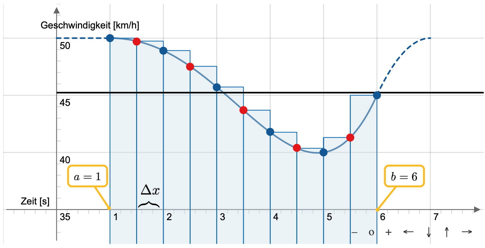

2.1 Integrieren ist Mitteln#
Lernziele#
Lernziele
Sie können den Mittelwert einer Liste von Zahlen berechnen.
Sie können den Mittelwert einer Funktion in einem Intervall berechnen.
Mittelwert von Zahlen#
Ein Auto fährt in der Stadt mit 50 km/h und muss leicht abbremsen. Dabei werden folgende Geschwindigkeiten gemessen:
Zeit in s |
1 |
2 |
3 |
4 |
5 |
6 |
|---|---|---|---|---|---|---|
Geschwindigkeit in km/h |
50.0 |
48.9 |
45.7 |
41.8 |
40.0 |
45.0 |
Wenn jetzt danach gefragt wird, mit welcher Durchschnittsgeschwindigkeit das Auto in diesen sechs Sekunden unterwegs war, bilden wir den Mittelwert. Dazu addieren wir die sechs Geschwindigkeiten und teilen durch die Anzahl der Geschwindigkeitsmessungen.
Die Durchschnittgeschwindigkeit betrug also 45.23 km/h. Einen guten Eindruck der einzelnen Messwerte im Vergleich zu ihrem Mittelwert vermittelt das folgende Streudiagramm. Die blauen Kreise stehen für die gemessenen Werte aus der Tabelle. Auf der x-Achse sind die Zeitpunkte, auf der y-Achse die Geschwindigkeiten. Die schwarze Gerade repräsentiert den Mittelwert als konstante Funktion.
Allgemein können wir den Mittelwert von Messwerten folgendermaßen berechnen. Wir bezeichnen die Anzahl der Messungen mit \(N\) und die einzelnen Messungen mit \(y_1, y_2, \ldots, y_N\). Für den Mittelwert führen wir die Abkürzung \(\bar{y}\) ein. Dann wird der Mittelwert nach der Formel
berechnet. Um die Pünktchen in der Formel zu sparen, verwenden wir das Summensymbol \(\Sigma\):
Zusammenfassend halten wir folgende Definition eines Mittelwertes fest.
Was ist … der Mittelwert?
Der Mittelwert einer Liste von Zahlen ist die Summe der Zahlen geteilt durch ihre Anzahl. Berechnet wird der Mittelwert mit der Formel
Dabei ist \(\bar{y}\) die Bezeichnung für den Mittelwert, \(N\) die Anzahl der Zahlen und \(y_i\) sind die einzelnen Zahlen.
Mehr ist besser#
In einer Sekunde kann ganz schön viel passieren. Wir gehen jetzt davon aus, dass die Geschwindigkeit des Autos zweimal pro Sekunde gemessen wurde und nicht nur einmal pro Sekunde.
Die Geschwindigkeit zu den Zeitpunkten 1.5 s, 2.5 s, 3.5 s, 4.5 s und 5.5 s ergänzen unsere bisherigen Messungen und können als rote Kreise in dem folgenden Diagramm abgelesen werden.
An der Berechnung des Mittelwertes ändert sich nicht, aber normalerweise ist er bei 11 Messungen genauer als bei sechs Messungen. Wir rechnen also
Noch genauer würde es werden, wenn wir noch mehr Messwerte hinzunehmen. Der Mittelwert wäre dann perfekt, wenn wir unendliche viele Messungen hätten. Dann wäre der Mittelwert der Grenzwert
Das setzt aber voraus, dass wir kontinuierlich die Geschwindigkeit messen. Oder anders ausgedrückt, das setzt voraus, dass wir die Geschwindigkeit als eine Funktion darstellen können, als ein sogenanntes Zeit-Geschwindigkeitsdiagramm. Für den perfekten Mittelwert müssen wir also den Mittelwert der Funktion ausrechnen, aber was ist der Mittelwert einer Funktion?
Mittelwert einer Funktion#
Um einen Weg zu finden, den Mittelwert \(m\) einer Funktion \(f\) zu berechnen, starten wir erstmal mit einigen wenigen Messwerten. In unserem Beispiel können wir die Zeitpunkte, zu denen eine Messung durchgeführt wird, mit \(x_1\), \(x_2\), usw. bis \(x_N\) ausdrücken. Die dazugehörigen Geschwindigkeitenmessungen bzw. Funktionswerte bezeichnen wir dann mit \(f(x_1)\), \(f(x_2)\) usw. bis \(f(x_N)\). Dann gilt für die Berechnung des Mittelwertes
Aber eigentlich wollen wir ja den Grenzwert
ausrechnen. Um diesen Grenzwert auszurechnen, wenden wir jetzt zwei Tricks an. Wenn wir unendlich viele Messungen nehmen, um den Mittelwert auszurechnen, können wir eine Messung auch weglassen. Bei unendlich vielen Messungen fällt eine Messung nicht ins Gewicht. Wir lassen die letzte Messung weg. Dadurch müssen wir nur noch durch \((N-1)\) teilen und bis \(N-1\) summieren. Damit schreibt sich die Formel für den Mittelwert nun als
Das war der erste Trick. Nun erweitern wir die Messungen der Geschwindigkeit mit dem Bruch \((b-a)/(b-a)\). Dabei ist \(a\) der Startpunkt, zu dem die Messungen beginnen, und \(b\) der Endpunkt. Durch \(b-a\) wird also das Intervall auf der x-Achse beschreiben, in dem wir die Funktion \(f\) mitteln wollen. Am Wert der Summe ändert sich nichts, wenn wir jeden Messwert mit dem Bruch \((b-a)/(b-a)\) multiplizieren, da wir ja nur mit 1 multiplizieren. Wir können also mit beiden Tricks den Mittelwert schreiben als
Wenn in einer Summe jeder Term mit einer konstanten Zahl multipliziert wird, dürfen wir diese konstante Zahl in die Summe reinmultiplizieren oder ausklammern. Wir klammern jetzt die Zahl \(1/(b-a)\) aus und multiplizieren stattdessen die Zahl \(1/(N-1)\) in die Summe.
Das Intervall \(b-a\) wird also in \((N-1)\) kleine Stückchen unterteilt. Jedes Stückchen ist dabei gleich groß und könnte mit \(\Delta x\) bezeichnet werden. In der folgenden Grafik zeigen wir das anhand unserer 11 Messwerte. Da wir elf Messwerte im Abstand von 0.5 Sekunden haben, ergibt sich eine Schrittweite von \(\Delta x = 0.5\) Der Startzeitpunkt ist \(a = 1 s\) und der Endzeitpunkt ist \(b = 6 s\).
{kind=link}

Fig. 1 Annäherung des Mittelwertes einer Funktion \(f\) über die Summe von Produkten \(f(x_i)\cdot \Delta x\) im Intervall \([a,b]\)#
Wir summieren also über die Flächeninhalte \(f(x_i)\cdot \Delta x\). Wenn die Anzahl der Messungen zunimmt, werden die Stückchen \(\Delta x\) kleiner, dafür summieren wir über mehr Rechtecke. Diesen Grenzwert kennen wir schon, es ist der orientierte Flächeninhalt der Funktion \(f\) mit der x-Achse, also das Integral
Was ist … der Mittelwert einer Funktion?
Der Mittelwert einer Funktion in einem Intervall ist das bestimmte Integral auf diesem Intervall geteilt durch die Intervall-Länge.
Etwas präziser formuliert berechnet sich der Mittelwert \(m\) einer stetigen Funktion \(f\) im Intervall \([a,b]\) über die Formel
Beispiel#
Berechnen Sie den Mittelwert der Funktion \(f(x) = -0.05x^2+1.2x+7.8\) in dem Intervall \([0,24]\). Vergleichen Sie anschließend Ihre Ergebnis mit der Rechnung in dem folgenden Video.
Video “Mittelwert” von Magda liebt Mathe
Zusammenfassung und Ausblick#
In diesem Kapitel haben wir gelernt, dass das bestimmte Integral als eine Mittelung interpretiert werden kann. Im nächsten Kapitel gehen wir erneut auf den Aspekt ein, mit Hilfe von Integralen Flächen zu berechnen.